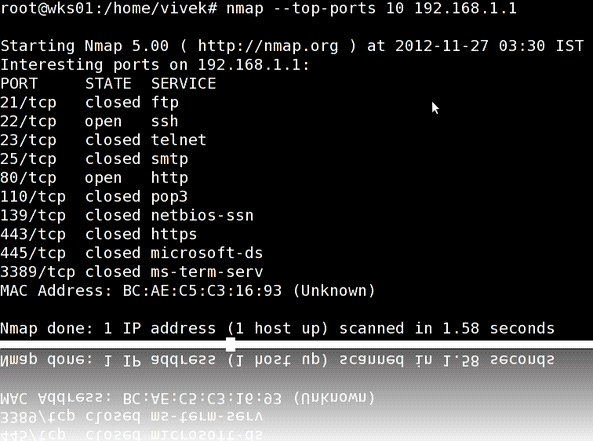
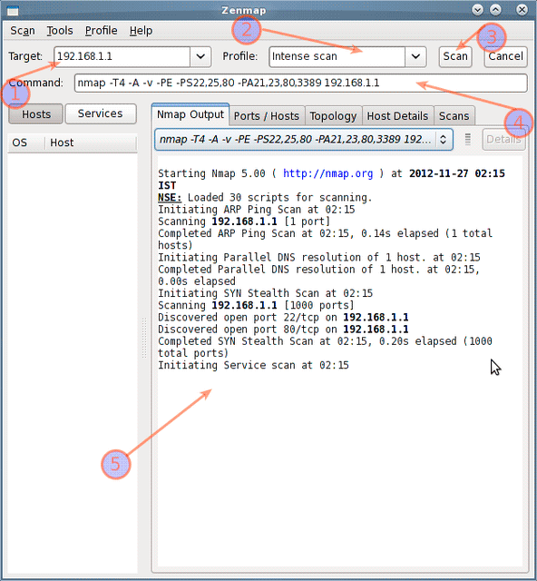

32 примера использования команды Nmap для Linux-систем
Опубликовано: 16:27, 26 марта, 2019.Обновлено: 16:27, 26 марта, 2019.
Nmap — это сокращение от Network Mapper. Это инструмент безопасности с открытым исходным кодом для исследования сети, сканирования безопасности и аудита. Тем не менее, команда nmap поставляется с большим количеством опций, которые делают утилиту более продвинутой, но в тоже время и более трудной для новичков. Цель этой статьи — познакомить вас с инструментом командной строки nmap для сканирования хоста и сети, чтобы определить возможные уязвимые точки. Вы также узнаете, как использовать Nmap в наступательных и оборонительных целях. Давайте посмотрим некоторые распространенные примеры команд nmap.

Что такое Nmap и для чего он используется?
Информация со страницы руководства по использованию:
Nmap («Network Mapper») — это инструмент с открытым исходным кодом для исследования сети и аудита безопасности. Он был разработан для быстрого сканирования больших сетей. Nmap использует необработанные IP-пакеты, чтобы определить, какие хосты доступны в сети, какие сервисы (имя и версия приложения) предлагают эти хосты, в каких операционных системах (и версиях ОС) они работают, какой тип фильтров/брандмауэров пакетов находятся в использовании и десятки других характеристик. Хотя Nmap обычно используется для аудита безопасности, многие системные и сетевые администраторы считают его полезным и для рутинных задач, таких как инвентаризация сети, управление расписаниями обновления служб и мониторинг времени работы хоста или службы.
Nmap был написан Гордоном Лионом. Данный инструмент запросто способен ответить на следующие вопросы:
Пример настройки (LAB)
Сканирование портов может быть незаконным в некоторых юрисдикциях. Поэтому настройте лабораторную среду следующим образом:
Где,
Все три системы связаны через коммутатор.
# 1: Сканирование одного хоста или IP-адреса (IPv4)
### Scan a single ip address ###
nmap 192.168.1.1
## Scan a host name ###
nmap server1.sedicomm.com
## Scan a host name with more info###
nmap -v server1.sedicomm.com
Пример вывода:
# 2: Сканирование нескольких IP-адресов или подсетей (IPv4)
nmap 192.168.1.1 192.168.1.2 192.168.1.3
## works with same subnet i.e. 192.168.1.0/24
nmap 192.168.1.1,2,3
Вы также можете сканировать диапазон IP-адресов:
nmap 192.168.1.1-20
Вы можете сканировать диапазон IP-адресов, используя подстановочный знак:
nmap 192.168.1.*
Наконец, вы можете сканировать всю подсеть:
nmap 192.168.1.0/24
# 3: Чтение списка хостов/сетей из файла (IPv4)
Опция -iL позволяет вам сканировать список целевых систем, используя текстовый файл. Это полезно для сканирования большого количества хостов/сетей. Создайте текстовый файл следующим образом:
cat > /tmp/test.txt
Пример входных данных:
server1.sedicomm.com
192.168.1.0/24
192.168.1.1/24
10.1.2.3
localhost
Синтаксис:
nmap -iL /tmp/test.txt
# 4: Сканирование с исключением хостов/сетей (IPv4)
При сканировании большого количества хостов/сетей вы можете исключить некоторые хосты из проверки:
nmap 192.168.1.0/24 --exclude 192.168.1.5
nmap 192.168.1.0/24 --exclude 192.168.1.5,192.168.1.254
Или же исключить список хостов/сетей прямо из файла /tmp/exclude.txt :
nmap -iL /tmp/scanlist.txt --excludefile /tmp/exclude.txt
# 5: Включение скрипта сканирования ОС и определения версии (IPv4)
nmap -A 192.168.1.254
nmap -v -A 192.168.1.1
nmap -A -iL /tmp/scanlist.txt
# 6: Проверка, защищен ли хост/сеть брандмауэром
nmap -sA 192.168.1.254
nmap -sA server1.sedicomm.com
# 7: Сканирование хоста, в случае если он защищен брандмауэром
nmap -PN 192.168.1.1
nmap -PN server1.sedicomm.com
# 8: Сканирование хоста/адреса IPv6
Опция -6 включает сканирование IPv6. Синтаксис:
nmap -6 IPv6-Address-Here
nmap -6 server1.sedicomm.com
nmap -6 2607:f0d0:1002:51::4
nmap -v A -6 2607:f0d0:1002:51::4
# 9: Сканирование сети и поиск устройств/серверов которые работают
Этот метод называется host discovery или ping scan:
nmap -sP 192.168.1.0/24
Пример вывода:
Host 192.168.1.1 is up (0.00035s latency).
MAC Address: BC:AE:C5:C3:16:93 (Unknown)
Host 192.168.1.2 is up (0.0038s latency).
MAC Address: 74:44:01:40:57:FB (Unknown)
Host 192.168.1.5 is up.
Host nas03 (192.168.1.12) is up (0.0091s latency).
MAC Address: 00:11:32:11:15:FC (Synology Incorporated)
Nmap done: 256 IP addresses (4 hosts up) scanned in 2.80 second
# 10: Выполнение быстрого сканирования
nmap -F 192.168.1.1
# 11: Поиск причины, по которой порт находится в определенном состоянии
nmap --reason 192.168.1.1
nmap --reason server1.sedicomm.com
# 12: Поиск открытых портов
nmap --open 192.168.1.1
nmap --open server1.sedicomm.com
# 13: Просмотр всех отправленных и полученных пакетов
nmap --packet-trace 192.168.1.1
nmap --packet-trace server1.sedicomm.com
14 #: Просмотр интерфейсов хостов и маршрутов
Эта функция полезна для отладки (такие команды как ip, route или netstat, выполняют вывод с использованием nmap):
nmap --iflist
Пример выводов:
Starting Nmap 5.00 ( http://nmap.org ) at 2012-11-27 02:01 IST
************************INTERFACES************************
DEV (SHORT) IP/MASK TYPE UP MAC
lo (lo) 127.0.0.1/8 loopback up
eth0 (eth0) 192.168.1.5/24 ethernet up B8:AC:6F:65:31:E5
vmnet1 (vmnet1) 192.168.121.1/24 ethernet up 00:50:56:C0:00:01
vmnet8 (vmnet8) 192.168.179.1/24 ethernet up 00:50:56:C0:00:08
ppp0 (ppp0) 10.1.19.69/32 point2point up
**************************ROUTES**************************
DST/MASK DEV GATEWAY
10.0.31.178/32 ppp0
209.133.67.35/32 eth0 192.168.1.2
192.168.1.0/0 eth0
192.168.121.0/0 vmnet1
192.168.179.0/0 vmnet8
169.254.0.0/0 eth0
10.0.0.0/0 ppp0
0.0.0.0/0 eth0 192.168.1.2
# 15: Сканирование определенных портов
nmap -p [port] hostName
## Scan port 80
nmap -p 80 192.168.1.1
## Scan TCP port 80
nmap -p T:80 192.168.1.1
## Scan UDP port 53
nmap -p U:53 192.168.1.1
## Scan two ports ##
nmap -p 80,443 192.168.1.1
## Scan port ranges ##
nmap -p 80-200 192.168.1.1
## Combine all options ##
nmap -p U:53,111,137,T:21-25,80,139,8080 192.168.1.1
nmap -p U:53,111,137,T:21-25,80,139,8080 server1.sedicomm.com
nmap -v -sU -sT -p U:53,111,137,T:21-25,80,139,8080 192.168.1.254
## Scan all ports with * wildcard ##
nmap -p "*" 192.168.1.1
## Scan top ports i.e. scan $number most common ports ##
nmap --top-ports 5 192.168.1.1
nmap --top-ports 10 192.168.1.1
Пример вывода:
Starting Nmap 5.00 ( http://nmap.org ) at 2012-11-27 01:23 IST
Interesting ports on 192.168.1.1:
PORT STATE SERVICE
21/tcp closed ftp
22/tcp open ssh
23/tcp closed telnet
25/tcp closed smtp
80/tcp open http
110/tcp closed pop3
139/tcp closed netbios-ssn
443/tcp closed https
445/tcp closed microsoft-ds
3389/tcp closed ms-term-serv
MAC Address: BC:AE:C5:C3:16:93 (Unknown)
Nmap done: 1 IP address (1 host up) scanned in 0.51 seconds
# 16: Самый быстрый способ просканировать все ваши устройства/компьютеры на наличие открытых портов
nmap -T5 192.168.1.0/24
# 17: Обнаружение удаленной операционной системы
Вы можете идентифицировать приложения удалённого хоста или удалённую ОС, используя опцию -O:
nmap -O 192.168.1.1
nmap -O --osscan-guess 192.168.1.1
nmap -v -O --osscan-guess 192.168.1.1
Пример вывода:
Starting Nmap 5.00 ( http://nmap.org ) at 2012-11-27 01:29 IST
NSE: Loaded 0 scripts for scanning.
Initiating ARP Ping Scan at 01:29
Scanning 192.168.1.1 [1 port]
Completed ARP Ping Scan at 01:29, 0.01s elapsed (1 total hosts)
Initiating Parallel DNS resolution of 1 host. at 01:29
Completed Parallel DNS resolution of 1 host. at 01:29, 0.22s elapsed
Initiating SYN Stealth Scan at 01:29
Scanning 192.168.1.1 [1000 ports]
Discovered open port 80/tcp on 192.168.1.1
Discovered open port 22/tcp on 192.168.1.1
Completed SYN Stealth Scan at 01:29, 0.16s elapsed (1000 total ports)
Initiating OS detection (try #1) against 192.168.1.1
Retrying OS detection (try #2) against 192.168.1.1
Retrying OS detection (try #3) against 192.168.1.1
Retrying OS detection (try #4) against 192.168.1.1
Retrying OS detection (try #5) against 192.168.1.1
Host 192.168.1.1 is up (0.00049s latency).
Interesting ports on 192.168.1.1:
Not shown: 998 closed ports
PORT STATE SERVICE
22/tcp open ssh
80/tcp open http
MAC Address: BC:AE:C5:C3:16:93 (Unknown)
Device type: WAP|general purpose|router|printer|broadband router
Running (JUST GUESSING) : Linksys Linux 2.4.X (95%), Linux 2.4.X|2.6.X (94%), MikroTik RouterOS 3.X (92%), Lexmark embedded (90%), Enterasys embedded (89%), D-Link Linux 2.4.X (89%), Netgear Linux 2.4.X (89%)
Aggressive OS guesses: OpenWrt White Russian 0.9 (Linux 2.4.30) (95%), OpenWrt 0.9 - 7.09 (Linux 2.4.30 - 2.4.34) (94%), OpenWrt Kamikaze 7.09 (Linux 2.6.22) (94%), Linux 2.4.21 - 2.4.31 (likely embedded) (92%), Linux 2.6.15 - 2.6.23 (embedded) (92%), Linux 2.6.15 - 2.6.24 (92%), MikroTik RouterOS 3.0beta5 (92%), MikroTik RouterOS 3.17 (92%), Linux 2.6.24 (91%), Linux 2.6.22 (90%)
No exact OS matches for host (If you know what OS is running on it, see http://nmap.org/submit/ ).
TCP/IP fingerprint:
OS:SCAN(V=5.00%D=11/27%OT=22%CT=1%CU=30609%PV=Y%DS=1%G=Y%M=BCAEC5%TM=50B3CA
OS:4B%P=x86_64-unknown-linux-gnu)SEQ(SP=C8%GCD=1%ISR=CB%TI=Z%CI=Z%II=I%TS=7
OS:)OPS(O1=M2300ST11NW2%O2=M2300ST11NW2%O3=M2300NNT11NW2%O4=M2300ST11NW2%O5
OS:=M2300ST11NW2%O6=M2300ST11)WIN(W1=45E8%W2=45E8%W3=45E8%W4=45E8%W5=45E8%W
OS:6=45E8)ECN(R=Y%DF=Y%T=40%W=4600%O=M2300NNSNW2%CC=N%Q=)T1(R=Y%DF=Y%T=40%S
OS:=O%A=S+%F=AS%RD=0%Q=)T2(R=N)T3(R=N)T4(R=Y%DF=Y%T=40%W=0%S=A%A=Z%F=R%O=%R
OS:D=0%Q=)T5(R=Y%DF=Y%T=40%W=0%S=Z%A=S+%F=AR%O=%RD=0%Q=)T6(R=Y%DF=Y%T=40%W=
OS:0%S=A%A=Z%F=R%O=%RD=0%Q=)T7(R=N)U1(R=Y%DF=N%T=40%IPL=164%UN=0%RIPL=G%RID
OS:=G%RIPCK=G%RUCK=G%RUD=G)IE(R=Y%DFI=N%T=40%CD=S)
Uptime guess: 12.990 days (since Wed Nov 14 01:44:40 2012)
Network Distance: 1 hop
TCP Sequence Prediction: Difficulty=200 (Good luck!)
IP ID Sequence Generation: All zeros
Read data files from: /usr/share/nmap
OS detection performed. Please report any incorrect results at http://nmap.org/submit/ .
Nmap done: 1 IP address (1 host up) scanned in 12.38 seconds
Raw packets sent: 1126 (53.832KB) | Rcvd: 1066 (46.100KB)
# 18: Определение номера версий удаленных сервисов (сервер/демон).
nmap -sV 192.168.1.1
Пример вывода:
Starting Nmap 5.00 ( http://nmap.org ) at 2012-11-27 01:34 IST
Interesting ports on 192.168.1.1:
Not shown: 998 closed ports
PORT STATE SERVICE VERSION
22/tcp open ssh Dropbear sshd 0.52 (protocol 2.0)
80/tcp open http?
1 service unrecognized despite returning data.
# 19: Сканирование хоста с использованием TCP ACK (PA) и TCP Syn (PS) ping
Если брандмауэр блокирует стандартные запросы ICMP, попробуйте следующие методы обнаружения хоста:
nmap -PS 192.168.1.1
nmap -PS 80,21,443 192.168.1.1
nmap -PA 192.168.1.1
nmap -PA 80,21,200-512 192.168.1.1
# 20: Сканирование хоста с помощью IP протокола ping
nmap -PO 192.168.1.1
# 21: Сканирование хоста с помощью UDP-пинга
Это сканирование обходит межсетевые экраны и фильтры, которые могут отобразить только TCP:
nmap -PU 192.168.1.1
nmap -PU 2000.2001 192.168.1.1
# 22: Поиск наиболее часто используемых портов TCP, с использованием TCP SYN Scan
### Stealthy scan ###
nmap -sS 192.168.1.1
### Find out the most commonly used TCP ports using TCP connect scan (warning: no stealth scan)
### OS Fingerprinting ###
nmap -sT 192.168.1.1
### Find out the most commonly used TCP ports using TCP ACK scan
nmap -sA 192.168.1.1
### Find out the most commonly used TCP ports using TCP Window scan
nmap -sW 192.168.1.1
### Find out the most commonly used TCP ports using TCP Maimon scan
nmap -sM 192.168.1.1
# 23: Сканирование хоста на наличие UDP-сервисов (UDP scan)
Самые популярные сервисы в интернете работают по протоколу TCP. Это такие службы как DNS, SNMP и DHCP являются тремя наиболее распространенными службами, которые используют UDP. Используйте следующий синтаксис для поиска служб UDP:
nmap -sU nas03
nmap -sU 192.168.1.1
Пример вывода:
Starting Nmap 5.00 ( http://nmap.org ) at 2012-11-27 00:52 IST
Stats: 0:05:29 elapsed; 0 hosts completed (1 up), 1 undergoing UDP Scan
UDP Scan Timing: About 32.49% done; ETC: 01:09 (0:11:26 remaining)
Interesting ports on nas03 (192.168.1.12):
Not shown: 995 closed ports
PORT STATE SERVICE
111/udp open|filtered rpcbind
123/udp open|filtered ntp
161/udp open|filtered snmp
2049/udp open|filtered nfs
5353/udp open|filtered zeroconf
MAC Address: 00:11:32:11:15:FC (Synology Incorporated)
Nmap done: 1 IP address (1 host up) scanned in 1099.55 seconds
# 24: Сканирование для протокола IP
Этот тип сканирования позволяет определить, какие протоколы IP (TCP, ICMP, IGMP и т.д.) поддерживаются целевыми машинами:
nmap -sO 192.168.1.1
# 25. Сканирование брандмауэра на предмет уязвимости
Следующие типы сканирования используют небольшую лазейку в TCP и подходят для проверки соответствия настроек безопасности для защиты от распространенных атак:
## TCP Null Scan to fool a firewall to generate a response ##
## Does not set any bits (TCP flag header is 0) ##
nmap -sN 192.168.1.254
## TCP Fin scan to check firewall ##
## Sets just the TCP FIN bit ##
nmap -sF 192.168.1.254
## TCP Xmas scan to check firewall ##
## Sets the FIN, PSH, and URG flags, lighting the packet up like a Christmas tree ##
nmap -sX 192.168.1.254
# 26: Сканирование брандмауэра на наличие фрагментов пакетов
Флаг -f заставляет данное сканирование (включая проверки ping) использовать крошечные фрагментированные IP-пакеты. Идея состоит в том, чтобы разделить заголовок TCP на несколько пакетов, чтобы усложнить фильтрацию пакетов, усложнить работу системам обнаружения вторжений и т.д.
nmap -f 192.168.1.1
nmap -f fw2.nixcraft.net.in
nmap -f 15 fw2.nixcraft.net.in
## Set your own offset size with the --mtu option ##
nmap --mtu 32 192.168.1.1
# 27: Скрытое сканирование с ловушкой
Флаг -D показывает удаленному хосту, что хосты, которые вы указали в качестве ловушек, также сканируют целевую сеть. Таким образом, их IDS могут сообщать о 5-10 сканированиях портов с уникальных IP-адресов, но они не будут знать, какой IP сканировали они, а какие были отсканированы хостами-ловушками:
nmap -n -Ddecoy-ip1,decoy-ip2,your-own-ip,decoy-ip3,decoy-ip4 remote-host-ip
nmap -n -D192.168.1.5,10.5.1.2,172.1.2.4,3.4.2.1 192.168.1.5
# 28: Сканирование брандмауэра на предмет спуфинга MAC-адресов
### Spoof your MAC address ##
nmap --spoof-mac MAC-ADDRESS-HERE 192.168.1.1
### Add other options ###
nmap -v -sT -PN --spoof-mac MAC-ADDRESS-HERE 192.168.1.1
### Use a random MAC address ###
### The number 0, means nmap chooses a completely random MAC address ###
nmap -v -sT -PN --spoof-mac 0 192.168.1.1
# 29: Сохранение вывода в текстовый файл
Синтаксис:
nmap 192.168.1.1 > output.txt
nmap -oN /path/to/filename 192.168.1.1
nmap -oN output.txt 192.168.1.1
# 30: Сканирование веб-серверов и каналов в Nikto
nmap -p80 192.168.1.2/24 -oG - | /path/to/nikto.pl -h -
nmap -p80,443 192.168.1.2/24 -oG - | /path/to/nikto.pl -h -
# 31: Ускорение сканирования nmap
Чтобы увеличить скорость сканирования nmap передайте флаг -T:
nmap -v -sS -A -T4 192.168.2.5
Пример вывода:
Starting Nmap 7.40 ( https://nmap.org ) at 2017-05-15 01:52 IST
NSE: Loaded 143 scripts for scanning.
NSE: Script Pre-scanning.
Initiating NSE at 01:52
Completed NSE at 01:52, 0.00s elapsed
Initiating NSE at 01:52
Completed NSE at 01:52, 0.00s elapsed
Initiating ARP Ping Scan at 01:52
Scanning 192.168.2.15 [1 port]
Completed ARP Ping Scan at 01:52, 0.01s elapsed (1 total hosts)
Initiating SYN Stealth Scan at 01:52
Scanning dellm6700 (192.168.2.15) [1000 ports]
Discovered open port 5900/tcp on 192.168.2.15
Discovered open port 80/tcp on 192.168.2.15
Discovered open port 22/tcp on 192.168.2.15
Completed SYN Stealth Scan at 01:53, 4.62s elapsed (1000 total ports)
Initiating Service scan at 01:53
Scanning 3 services on dellm6700 (192.168.2.15)
Completed Service scan at 01:53, 6.01s elapsed (3 services on 1 host)
Initiating OS detection (try #1) against dellm6700 (192.168.2.15)
Retrying OS detection (try #2) against dellm6700 (192.168.2.15)
NSE: Script scanning 192.168.2.15.
Initiating NSE at 01:53
Completed NSE at 01:53, 30.02s elapsed
Initiating NSE at 01:53
Completed NSE at 01:53, 0.00s elapsed
Nmap scan report for dellm6700 (192.168.2.15)
Host is up (0.00044s latency).
Not shown: 996 filtered ports
PORT STATE SERVICE VERSION
22/tcp open ssh (protocol 2.0)
| fingerprint-strings:
| NULL:
|_ SSH-2.0-OpenSSH_7.4p1 Ubuntu-10
| ssh-hostkey:
| 2048 1d:14:84:f0:c7:21:10:0e:30:d9:f9:59:6b:c3:95:97 (RSA)
|_ 256 dc:59:c6:6e:33:33:f2:d2:5d:9b:fd:b4:9c:52:c1:0a (ECDSA)
80/tcp open http nginx 1.10.0 (Ubuntu)
|_ Supported Methods: GET HEAD
|_http-server-header: nginx/1.10.0 (Ubuntu)
|_http-title: Apache2 Ubuntu Default Page: It works
443/tcp closed https
5900/tcp open vnc VNC (protocol 3.7)
1 service unrecognized despite returning data. If you know the service/version, please submit the following fingerprint at https://nmap.org/cgi-bin/submit.cgi?new-service :
SF-Port22-TCP:V=7.40%I=7%D=5/15%Time=5918BCAA%P=x86_64-apple-darwin16.3.0%
SF:r(NULL,20,"SSH-2\.0-OpenSSH_7\.4p1\x20Ubuntu-10\n");
MAC Address: F0:1F:AF:1F:2C:60 (Dell)
Device type: general purpose
Running (JUST GUESSING): Linux 3.X|4.X|2.6.X (95%), OpenBSD 4.X (85%)
OS CPE: cpe:/o:linux:linux_kernel:3 cpe:/o:linux:linux_kernel:4 cpe:/o:linux:linux_kernel:2.6.32 cpe:/o:openbsd:openbsd:4.0
Aggressive OS guesses: Linux 3.11 - 4.1 (95%), Linux 4.4 (95%), Linux 3.13 (92%), Linux 4.0 (90%), Linux 2.6.32 (89%), Linux 2.6.32 or 3.10 (89%), Linux 3.2 - 3.8 (89%), Linux 3.10 - 3.12 (88%), Linux 2.6.32 - 2.6.33 (87%), Linux 2.6.32 - 2.6.35 (87%)
No exact OS matches for host (test conditions non-ideal).
Uptime guess: 0.000 days (since Mon May 15 01:53:08 2017)
Network Distance: 1 hop
TCP Sequence Prediction: Difficulty=252 (Good luck!)
IP ID Sequence Generation: All zeros
Service Info: OS: Linux; CPE: cpe:/o:linux:linux_kernel
TRACEROUTE
HOP RTT ADDRESS
1 0.44 ms dellm6700 (192.168.2.15)
NSE: Script Post-scanning.
Initiating NSE at 01:53
Completed NSE at 01:53, 0.00s elapsed
Initiating NSE at 01:53
Completed NSE at 01:53, 0.00s elapsed
Read data files from: /usr/local/bin/../share/nmap
OS and Service detection performed. Please report any incorrect results at https://nmap.org/submit/ .
Nmap done: 1 IP address (1 host up) scanned in 46.02 seconds
Raw packets sent: 2075 (95.016KB) | Rcvd: 50 (3.084KB)
# 32: Что делать если я не фанат инструментов командной строки?
Попробуйте zenmap — официальный GUI для программы Nmap Security Scanner.
Zenmap является официальным графическим интерфейсом Nmap Security Scanner. Это мультиплатформенное (Linux, Windows, Mac OS X, BSD и т.д.) бесплатное приложение с открытым исходным кодом, которое призвано упростить использование Nmap для новичков и одновременно предоставляя расширенные функции опытным пользователям Nmap. Часто используемые сканы могут быть сохранены в виде избранных профилей, чтобы их было легко запускать повторно. Инструмент создания команд позволяет интерактивно создавать командные строки Nmap. Результаты сканирования можно сохранить и просмотреть позже. Сохраненные результаты сканирования можно сравнить друг с другом, чтобы увидеть, чем они отличаются.
Вы можете установить zenmap с помощью следующей команды apt-get:
$ sudo apt-get install zenmap
Пример вывода:
[sudo] password for vivek:
Reading package lists... Done
Building dependency tree
Reading state information... Done
The following NEW packages will be installed:
zenmap
0 upgraded, 1 newly installed, 0 to remove and 11 not upgraded.
Need to get 616 kB of archives.
After this operation, 1,827 kB of additional disk space will be used.
Get:1 http://debian.osuosl.org/debian/ squeeze/main zenmap amd64 5.00-3 [616 kB]
Fetched 616 kB in 3s (199 kB/s)
Selecting previously deselected package zenmap.
(Reading database ... 281105 files and directories currently installed.)
Unpacking zenmap (from .../zenmap_5.00-3_amd64.deb) ...
Processing triggers for desktop-file-utils ...
Processing triggers for gnome-menus ...
Processing triggers for man-db ...
Setting up zenmap (5.00-3) ...
Processing triggers for python-central ...
Введите следующую команду, чтобы запустить zenmap:
$ sudo zenmap
Пример вывода:

Рекомендации:
Официальное руководство проекта Nmap по обнаружению сети и сканирования безопасности.
Официальная домашняя страница проекта Nmap.